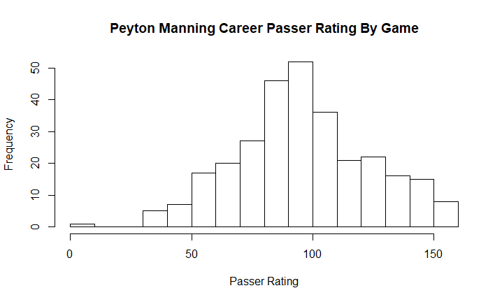

Is Peyton Manning a Playoff Quarterback?
Ajay Balaji, Victor Chang, Steven Liao
Writeup by Ajay Balaji and Steven Liao on Sept. 14, 2017.
TLDR: Is Peyton Manning a regular season quarterback? We tested this by comparing Manning's average Passer Rating in the playoffs against Manning's average Passer Rating against playoff teams in the regular season. Performing a simple difference-in-means test, we found no significant drop-off in Manning's play against similar-level opponents in the postseason. We then used the same metric to compare Manning to several other quarterbacks (including Brady, Favre, Brees).
Long Version:
Peyton Manning is one of the most decorated quarterbacks of all time. Manning's career accomplishments include:
-
5-time NFL MVP (NFL record)
-
Two-time Super Bowl Champ
-
Most career passing yards (71,940)
-
Most passing yards in a single season (5,477 in 2013)
-
Most passing touchdowns in a single season (55 in 2013)
Despite being arguably the most prolific quarterback of all time, Manning is often left out of discussions for the greatest quarterback of all time, with detractors pointing to his lack of playoff success, only having won two Super Bowl rings.
In this project, we wanted to gain a clearer picture as to whether it's fair to consider Manning a regular-season quarterback beyond looking just at the number of Super Bowl rings he has.
(Despite rings having almost a canonical status as a supreme measure of greatness, in a sport like football with 22 players on the field at the same time, we can do better).
Methodology
We tested the notion of Manning being a regular-season quarterback by comparing his regular season performance to his playoff performance.
To begin, we used NFL Passer Rating as an objective passing metric. We also considered ESPN's QB Rating, ProFootballFocus's Passing Grades , and FootballOutsiders' DYAR , but the former didn't have data going back to the beginning of Manning's career, and the latter two are not publicly available.
We used Python's BeautifulSoup Module to scrape Passer Rating for every NFL game Peyton Manning has started in his career (playoffs and regular season) from Pro Football Reference .
To account for the fact that quarterbacks play, on average, tougher opponents (and defenses) in the playoffs, we only looked at regular season games against teams which made the playoffs that year. We then performed a difference in means test between Peyton Manning's passer rating against playoff teams in the regular season and Manning's passer rating in the postseason.
Results
A starting point was found by taking Manning's average passer rating in the regular season and playoffs:
|
Reg Season |
Playoffs |
|
97.112 |
87.167 |
At first glance, the results seem to clearly support the notion that Manning cracks under the pressure of the playoffs. However, as noted above this was expected due to the superior defenses of playoff teams. Thus we ran the analysis again with a smaller pool of regular season games: those against teams that ended up making the playoffs that season.
|
Reg Season |
Playoffs |
|
88.399 |
87.167 |
After filtering for regular season games against playoff teams, there is actually only a one point difference between Manning's regular season and playoff averages, suggesting that he is not a regular season quarterback.
To test whether or not this difference, though small, could be significant (i.e. still possibly indicative of a difference in performance), we performed a difference of means test with the null hypothesis that Manning does not perform significantly worse in the playoffs than in the regular season. To perform the difference in means test, we make the following assumptions:
-
We assume the variance of Manning's Passer Rating is constant between playoff games and regular season games. This is not conclusive looking at the data (Manning's variance in passer rating is 701 and 956 for regular season and postseason games, respectively), but the difference in means test is relatively robust against violations of this rule so it's not a terribly massive assumption to make.
-
We assume Passer Rating for each game follows a normal distribution. This assumption appears to hold reasonably true:


-
We assume Manning's Passer Rating in each game is independent. For the most part, this assumption appears to be reasonable to make, though it is imperfect in the case where Manning plays the same opponent twice in the regular season.
This difference in means test gave p-value 0.8506, showing that the null hypothesis cannot be rejected and we do not conclude that Manning performs worse in the playoffs.
Comparison to Other Quarterbacks
After running through the analysis with Manning, we wanted to see how his performance compared to other elite quarterbacks of his era. Tom Brady, Drew Brees, Brett Favre, Aaron Rodgers, Ben Roethlisberger, and Kurt Warner were chosen to be examined, as each played or is playing at a Hall of Fame level and has a sizable postseason sample to work with. The same analysis as above was conducted with each of these quarterbacks, with results below:
|
Player |
Filtered Reg. Season - Postseason Passer Rating |
p - value |
|
Kurt Warner |
14.84 |
.1171 |
|
Drew Brees |
9.83 |
.1175 |
|
Brett Favre |
9.79 |
.1061 |
|
Peyton Manning |
-1.23 |
.8506 |
|
Aaron Rodgers |
-3.57 |
.6114 |
|
Ben Roethlisberger |
-3.81 |
.5936 |
|
Tom Brady |
-5.16 |
.3033 |
As shown by the table, there is a range of performance increase/decrease in the postseason among this group of quarterbacks. However, since none of the p-values are below the 0.05 threshold we cannot conclusively say that any of the above quarterbacks performed statistically significantly better/worse in the playoffs than in the regular season.
We can see that Manning is right in the middle of the pack; by our measures, some of his peers experience a greater drop off in performance than him while others manage to elevate their level of play in the crucible of the playoffs. While this analysis only addresses one of many variables, it does offer an interesting lens on the question of the greatest quarterback of the era.
Limitations and Conclusions
There were several limitations to our analysis - first, passer rating is not necessarily reflective of how well a quarterback played. Second, while most of the games in our analysis were independent to each other (or at least it doesn't seem egregious to say they're independent), there are times when Manning plays a team twice in a season, and those games are not independent. While this violates the independence assumption of the difference in means test, we understand that a perfect study in this regard is difficult to come by (since we're testing on past data). Since the independence assumptions is not violated often, we chose to move forward with our analysis and share our findings.
The analysis conducted above shows that Manning does not perform significantly worse in the postseason, nor does he fall far behind the majority of his peers in his postseason / regular season passer rating differential. Thus, based solely on the results of this analysis, we cannot endorse a reputation of Regular Season Quarterback for Peyton Manning. Though he may not have the ring count of some of the other greats of the sport, there is no doubt that Manning has earned his place as one of the greatest quarterbacks the league has ever seen.
We're open to suggestions and improvements to this study. Please feel free to reach out to ajay_balaji@brown.edu, steven_liao@brown.edu, or victor_chang1@brown.edu.